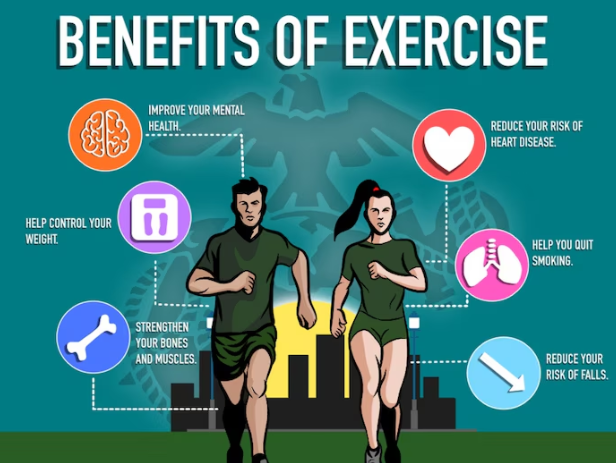
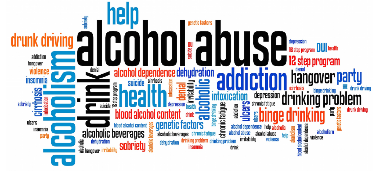

What is Physical Health?
Your body and mind are closely linked. When you take care of your physical health, you are also giving your
mental health a boost. Movement, rest, and good nutrition are not simply chores — they are ways to feel
better, think more clearly, and look after yourself.
Why It Matters:
- Staying active: Whether it is walking, dancing, swimming, or stretching — movement
benefits your mood, energy levels, and sleep.
- Eating well: Nourishing your body with balanced meals fuels your brain and helps you
feel more stable.
- Getting enough sleep: Rest is essential for recovery. It supports focus, emotional
regulation, and feeling refreshed.
- Listening to your body: Pain, fatigue, or tension are signs — not inconveniences. Pay
attention to them and respond with care.

It supports:
- Your energy and concentration — helping you perform well in studies, work, and daily life.
- Your mood — both movement and rest play a vital role in mental health.
- Your long-term health — reducing risks and building resilience.
- Your daily routine — from sleep and eating habits to overall self-care.
Small steps add up. Prioritising your physical wellbeing helps you thrive, not just get by.
Ways to Support Your Physical Wellbeing:
- Move your body: Walk, dance, stretch, swim — whatever feels enjoyable.
- Eat to nourish: Aim for balance, variety, and regular mealtimes.
- Prioritise sleep: Create a calming bedtime routine and keep to a schedule.
- Stay hydrated: Water affects everything from mood to memory.
- Rest when needed: Fatigue is a sign to slow down, not a weakness.
It is Important because: Physical wellbeing is not just about fitness — it is about feeling
comfortable and capable in your body and mind.
Alcohol and Drugs - Know the Facts
Substances can affect your body, your mind, and your relationships. Understanding how they work — and their
effects — can help you make informed choices.
What to Keep in Mind:
- You are allowed to ask questions: About safety, effects, or where to get support.
- You are not alone: If you are struggling with use or feeling uncertain, there are
people who care and want to help.
- Information is power: Knowing the risks and realities helps you protect your wellbeing.

They can affect:
- Your brain and body — from mood changes to long-term health risks.
- Your decision-making — especially in social, academic, or high-pressure situations.
- Your relationships — with friends, family, and yourself.
- Your ability to seek help — stigma can make it harder, but support is always available.
Understanding the effects and knowing where to turn can help you stay safe, informed, and in control.
Supportive Steps:
- Learn the facts: Understanding risks helps you make informed decisions.
- Know your limits: You do not need to explain yourself for saying no.
- Reach out: If you feel overwhelmed, dependent, or unsafe, help is available.
- Practice harm reduction: If you choose to use, learn how to do so more safely.
Why Alcohol and Drug Awareness Matters: Alcohol and drugs do not just affect your nights out —
they can have a lasting impact on your health, safety, and future.
Health Services
Health services exist to help you stay well — physically and mentally — so you can live life to the fullest.
What You Can Access:
- GPs and clinics: For check-ups, advice, and treatment.
- Mental health support: Therapists, counsellors, and wellbeing advisers.
- Emergency help: If you are in crisis or need urgent care.
- Guidance and referrals: If you are not sure where to start, someone can point you in
the right direction.
They help with:
- Physical health — from colds and injuries to long-term conditions.
- Mental health — counselling, stress management, and emotional support.
- Sexual health — confidential advice, testing, and contraception.
- Navigating care — finding the right help at the right time.
Accessing care early can make a big difference. You are never alone when it comes to looking after your
health.
Why Health Services Matter: Health services are not only for emergencies — they are there to
support your everyday wellbeing.
How to Access Support for All of the Above:
- Book appointments online or by phone at 07643 823423.
- Ask for guidance — even if you are unsure what you need.
- Use helplines or online resources for out-of-hours support.
-
Fill in the support form — it is a safe way to begin:
Go to Support Form